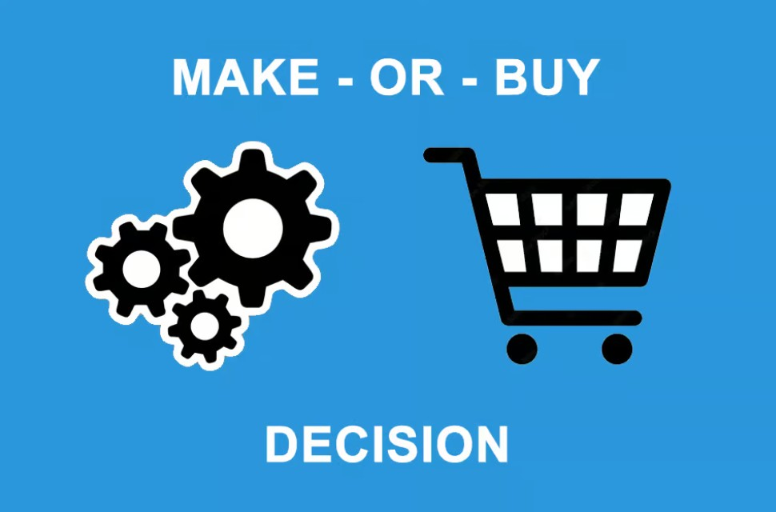
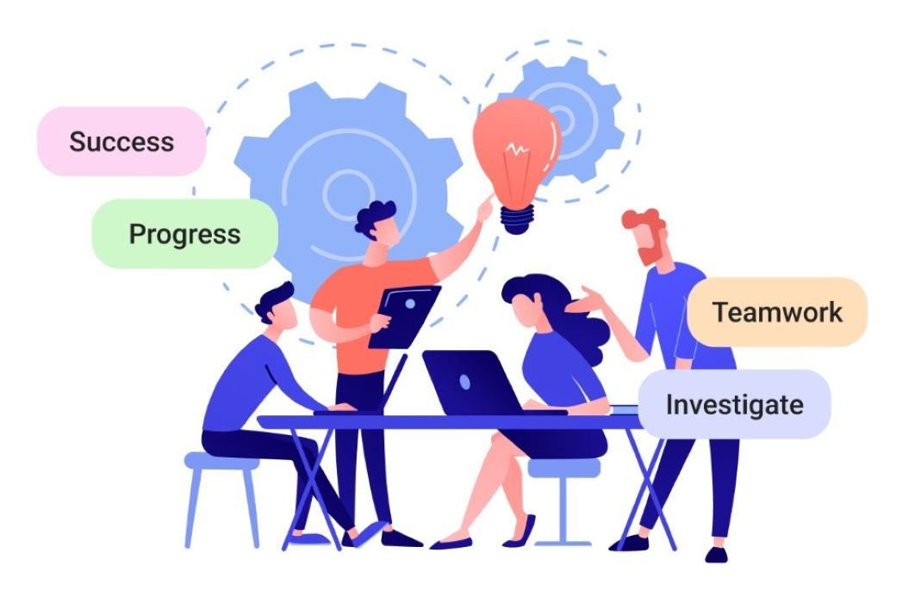

SQL Database Design & Insights for an E-commerce Company
MYSQL | ER-Diagram | Data Modelling
Designed a structured database to store and manage data efficiently using ER-Diagram and Logical Model. Utilized SQL Queries to retrieve meaningful insights.
Customer Churn Analysis
Power BI | Data Visualization | Data Cleaning | Data Manipulation
Designed a dashboard to examine factors affecting customer churn and provide insights or recommendations back to management to limit further churn.
Loan Default Prediction: Predict Default Protect Margins
Python (Scikit-Learn, Pandas) | Data Visualization | Feature Engineering | Machine Learning Models
Developed machine learning models to predict loan defaults, helping lenders reduce financial losses.
Real Estate Insights: Web Scraping & Market Trends
Python (Beautiful Soup, Pandas) | Web Scraping | Data Mining | Data Visualization (Matplotlib)
Extracted and analyzed real estate data using web scraping techniques to understand property pricing trends.
Talent Intelligence Dashboard
Tableau | Data Cleaning
Built an interactive talent intelligence dashboard for tracking attrition rates, employee satisfaction, and key demographics to drive people strategy.
Forecasting Tax Revenue: A Time-Series Approach
R (Forecast Package) | Time-Series Analysis | Data Visualization
Developed a time-series model to forecast US tax revenues, analyzing economic trends and seasonal patterns.

Make vs Buy: Supply Chain Analytics
Power BI | Scenario Analysis | Cost-Benefit Analysis
Built an interactive scenario-based dashboard to make data-driven Make vs Buy decisions by analyzing cost components and in-house production capabilities.

Sales Snapshot: CRM Insights for Managers
Power BI | Data Cleaning | CRM Analysis | Data Visualization
Developed a interactive Power BI dashboard to enable sales managers to track their team's quarterly performance.